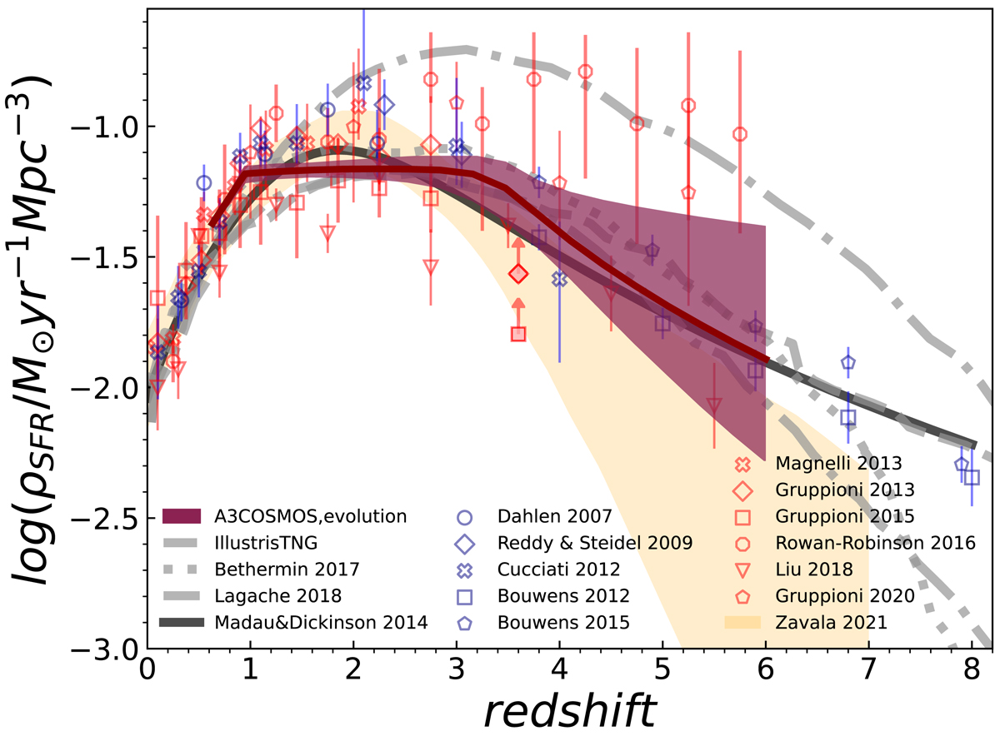
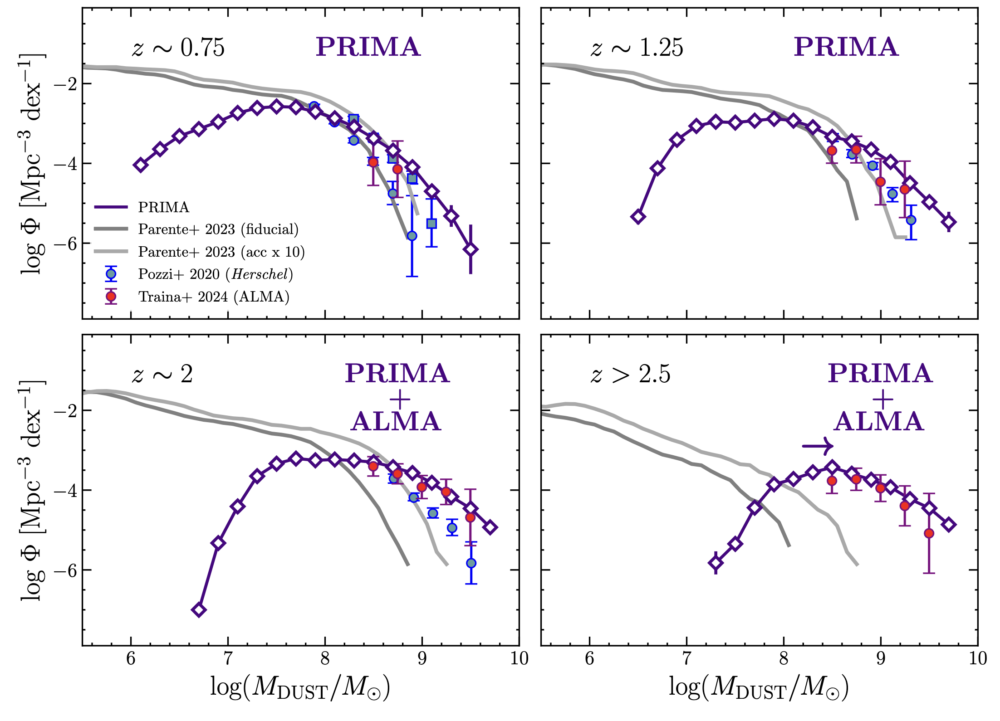
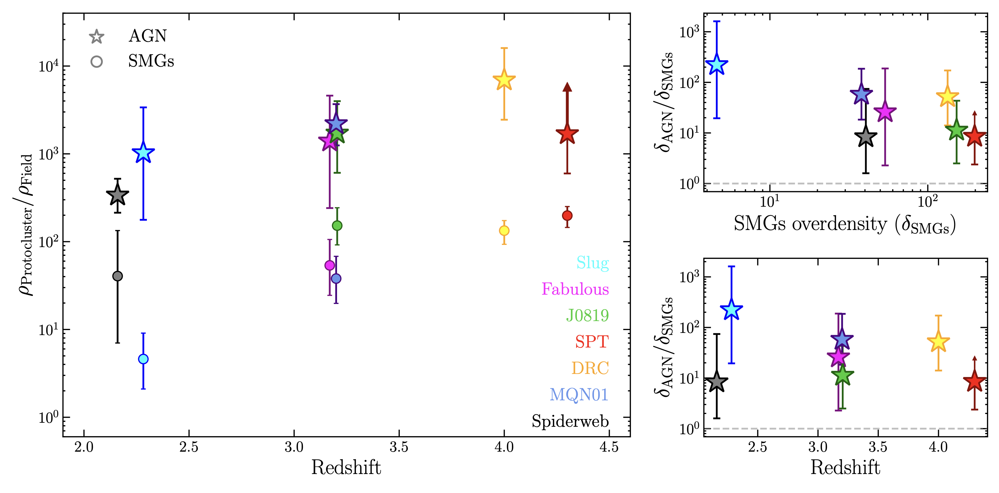

Understanding the Universe through galaxies and cosmic evolution
My research focuses on understanding the co-evolution between galaxies and their central supermassive black holes across cosmic time.
Galaxies are complex ecosystems shaped by internal processes and by the environments in which they reside. At the same time, the growth of supermassive black holes can profoundly influence the evolution of their host galaxies through active galactic nuclei (AGN) feedback.
I investigate these connections by combining multiwavelength observations, from the millimeter to the X-ray regime, to characterize the properties of star-forming galaxies and AGN from the local Universe to the epoch of the first massive structures.
How much of the cosmic star formation history is hidden by dust?
A significant fraction of star formation in the Universe is hidden by dust, making millimeter and infrared observations essential to obtain a complete view of galaxy evolution.
Using ALMA observations from the A3COSMOS survey, I investigate the physical and statistical properties of dust-obscured galaxies from the local Universe to the early stages of cosmic evolution.
By combining multiwavelength spectral energy distribution fitting and statistical analyses, I derived the contribution of dust-obscured galaxies to the cosmic star formation history, revealing the importance of obscured activity even at high redshift.

Cosmic star formation rate density as a function of redshift, including the contribution of dust-obscured galaxies. Adapted from Traina et al. 2024a.
Dust-obscured galaxies represent a significant contribution to the cosmic star formation history, even at high redshift.

Forecast of the dust mass function accessible with future far-infrared observations from PRIMA. Adapted from Traina et al. (2025b).
Current observations provide an increasingly detailed view of the dust content of galaxies across cosmic time, but large uncertainties remain at high redshift.
To explore what future facilities could reveal, I used the SPRITZ simulation to forecast the ability of the future PRIMA mission to constrain the cosmic dust content and the evolution of the dust mass function.
These forecasts highlight the potential of future far-infrared observations to extend the census of dust-rich galaxies into the early Universe.
Does the environment accelerate the growth of supermassive black holes?
Protoclusters provide a unique laboratory to investigate the connection between galaxy evolution and the growth of supermassive black holes. Their dense environments are characterized by large gas reservoirs, enhanced galaxy interactions, and rapidly assembling structures.
I investigate the AGN population in protoclusters at cosmic noon using deep X-ray observations, which allow us to identify both luminous and heavily obscured accreting supermassive black holes.
By comparing the overdensity of X-ray selected AGN with that of dust-obscured, submillimeter galaxies (SMGs), I investigate whether black hole growth is enhanced relative to the underlying galaxy population.

AGN and submillimeter galaxy overdensities in protoclusters across cosmic time. Adapted from Traina et al. 2025a.
AGN show a larger overdensity than SMGs in protoclusters, indicating that the enhancement of black hole growth can be stronger than the enhancement of the star-forming galaxy population.